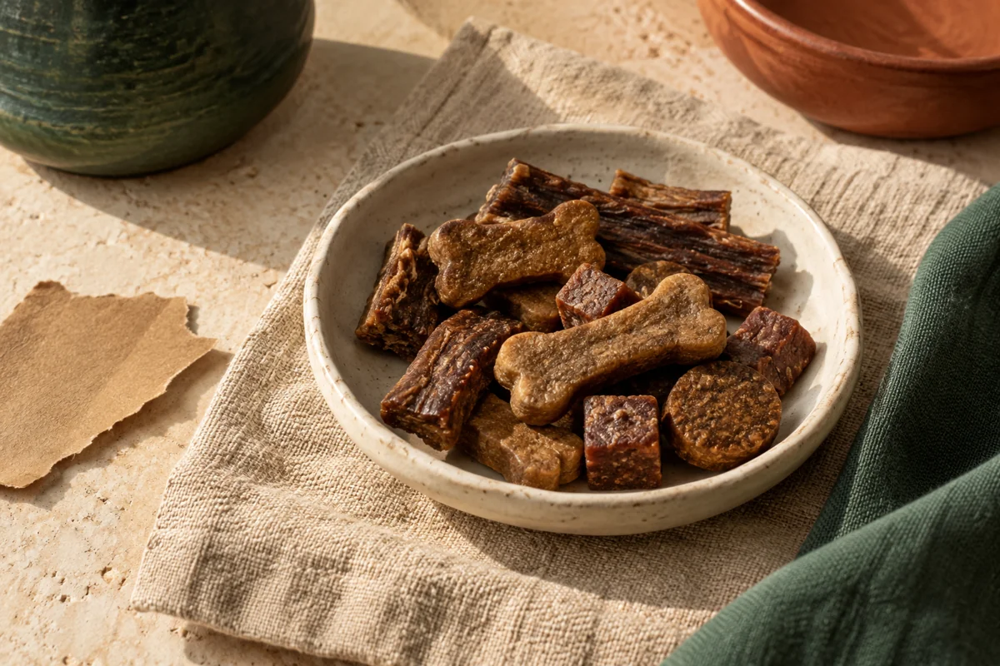

Goed kiezen begint bij het etiket.
Natuurlijk, biologisch, mono-eiwit. Wat zegt een verpakking écht? Vind heldere uitleg over hondensnacks, ingrediënten en de behoeften van je hond.
Een redactionele gids. Geen vervanging voor advies van je dierenarts.

Wat wil je
weten?
De ene snack is de andere niet. Kies de uitleg die past bij jouw vraag.
Een vraag.
Een goed begin.
Drie keuzes helpen je relevante uitleg te vinden. Dit is geen productselectie of voedingsadvies.
Waarvoor zoek je een snack?
Heeft je hond specifieke behoeften?
Welke eiwitbron?
Wat zit er
écht in?
Een mooie verpakking vertelt maar een deel van het verhaal. Leer de ingrediëntenlijst, analytische bestanddelen en toevoegingen van elkaar te onderscheiden.
Lees de etikettengidsEen keuzehulp,
met ruimte voor nuance.
We onderscheiden informatie op het etiket van ervaringen en claims. Eigenschappen en de context van je hond komen vóór korting of commissie.
Deze site is in ontwikkeling. Inhoud wacht op menselijke validatie.